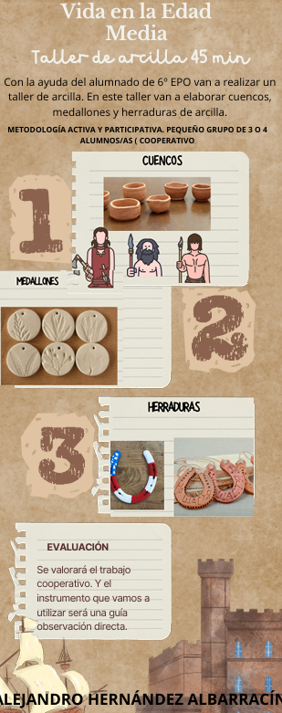

Talleres
unto con el alumnado de 6º de EPO vamos a realizar un taller de arcilla donde realizaremos diferentes cosas de la Edad Media.
Realizamos diferentes talleres de arcilla de cosas de la Edad Media:
5 años A: cuenco de arcilla.
5 años B: Amuleto (herradura).
5 años C: Medallón.
METODOLOGÍA ACTIVA Y PARTICIPATIVA:
- Agrupamientos:
Gran grupo en asamblea.
Pequeño grupo de 3 o 4 alumnos/as ( cooperativo).
Trabajo individual con el docente para confirmar los aprendizajes.
- Espacios:
Clase
RECURSOS:
Humanos: Pts, Ptis, logopeda, fisioterapeuta, especialista de inglés,
familias y tutoras y tutor.
Materiales: diferentes recursos materiales físicos( papel, arcilla,
pintura...) y digitales.
Hemos elaborado un Canva donde les enseñamos al alumnado los diferentes objetos que deben de realizar con la arcilla:
